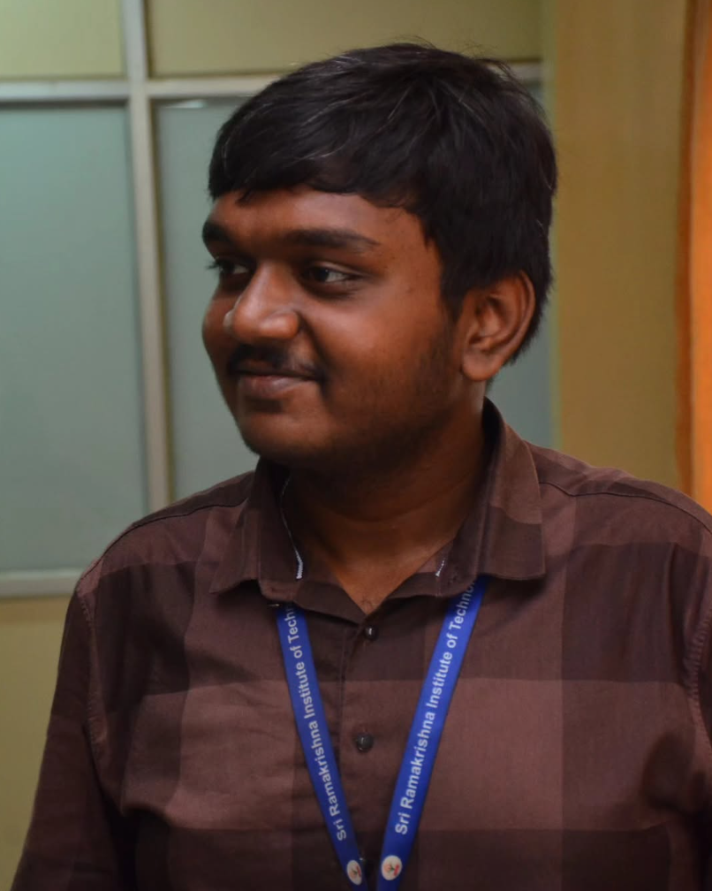

I don't just build things — I engineer experiences. From scalable web platforms to AI-powered inspection systems, I turn complex problems into elegant solutions. When I'm not coding, I'm behind the lens capturing stories.

I'm a Computer Science Engineering student at Sri Ramakrishna Institute of Technology, specializing in Cloud Computing. With a CGPA of 8.995, I balance academics with a relentless passion for building — whether it's AI-driven quality inspection systems, full-stack web platforms, or award-winning hackathon solutions. Co-founder of Alan Stills, a photography brand I've been running for over 10 years. I believe the best work happens at the intersection of technology, creativity, and purpose.
Delivering end-to-end solutions from concept to deployment — backed by real-world experience and a relentless attention to detail.
Building new websites or upgrading existing ones on your own domain and hosting. From fresh builds to complete revamps — responsive, performant, and SEO-optimized.
Custom software solutions tailored to business needs. Desktop apps, automation scripts, and scalable backend systems engineered for reliability.
Information management systems that streamline operations — student management, visitor tracking, and institutional portals with real-time analytics.
Computer vision-powered quality analysis using YOLO, TensorFlow, and custom detection models. Trained to ASTM standards with ~90% accuracy for industrial use.
End-to-end deployment services including domain setup, SSL, CI/CD pipelines, and cloud hosting on Vercel, AWS, and custom VPS environments.
End-to-end intellectual property filing assistance for utility patents — from prior art research and claim drafting to application preparation and submission support.
Through Alan Stills — capturing weddings, events, portraits, and commercial projects with cinematic quality. 10+ years of creative storytelling.
Professional photo editing, color grading, compositing, and retouching — transforming raw captures into polished, publication-ready visuals.
Cinematic video editing, motion graphics, visual effects, and color correction — from event highlight reels to polished short films and promotional content.
Company portfolio site for Glamscrap Technologies — showcasing their eco-friendly waste transformation services with modern design and SEO optimization.
Official website for ASME SRIT Student's Section, projecting the section to a global audience with event highlights, team profiles, and activity showcases.
Dedicated event site for the ASME Engineering Festivals (EFx) hosted by SRIT — featuring event details, schedules, and registration workflows.
Event website for the ASME TNNOVATE SDG Innovation Expo — featuring event details, registration, and information about Sustainable Development Goals initiatives.
Product site for NeuroBeats — AI-powered smart bongos making autism therapy magical, data-driven, and 85-90% more affordable than traditional methods.
Full-fledged student information system for St. Jude's Shrine — managing attendance, assessments, and comprehensive student records like a complete school application.
Add-on module for the Catechism IMS — tracking and rewarding students who arrive early to catechism classes with an automated recognition and awards system.
Dedicated portal for Vacation Bible School (VBS) attendance tracking — managing class enrollments, daily attendance records, and session-wise analytics.
Gatepass application for Sri Ramakrishna Institute of Technology — real-time visitor tracking and management for institutional security and record-keeping.
Computer Vision-based defect detection on automotive parts using YOLO models on X-Ray imaging. Trained to ASTM standards achieving ~90% accuracy for a major MNC.
Custom offline image annotation tool built for YOLO training dataset preparation — ensuring data confidentiality for industrial computer vision projects.
NLP + Computer Vision chatbot using VGG-16 for object recognition with Late Fusion Encoder for context-aware conversations. Applicable in e-commerce, healthcare, and security.
Smart India Hackathon 2025 — Portable laser QR engraving system with AI defect detection for railway track fittings. Integrates with Indian Railways' UDM & TMS platforms.
AI-powered predictive platform using XGBoost and spatial modeling to forecast waterborne disease outbreaks up to 7 days ahead at ward level. Built at KPRIET Fiestaa Hackathon.
AI-driven survey data processing built for TANCAM TN-IMPACT 2026. Automated cleaning, weighting, anomaly detection, and report generation with interactive dashboards.
IMAP-based bill fetching with OCR extraction and business validation. Full pipeline — clerk upload, manager verification, bank statement matching, and auditor accounting.
Acoustic wave + thermal imaging system for aluminium die casting defect detection — a non-X-Ray, in-line inspection method. Currently under active development.
Built for PFRDA Hackathon 2026. Interactive financial forecasting tool for NPS subscribers with scenario comparison dashboards and predictive retirement corpus modeling.
Got a project in mind? Need a developer, a photographer, or both? I'm always open to conversations that lead to great work.